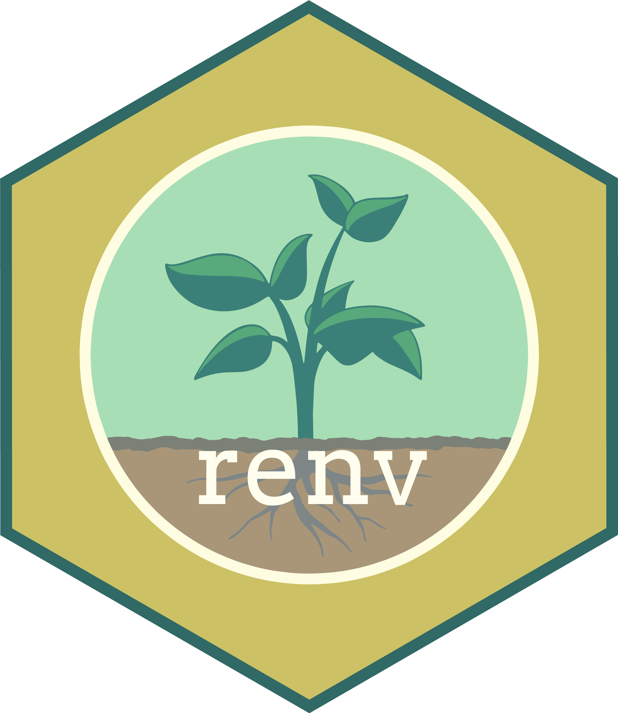
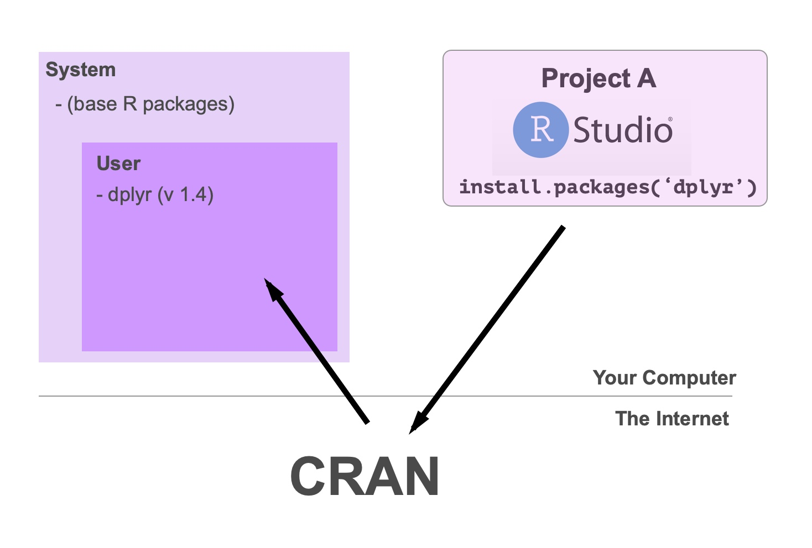
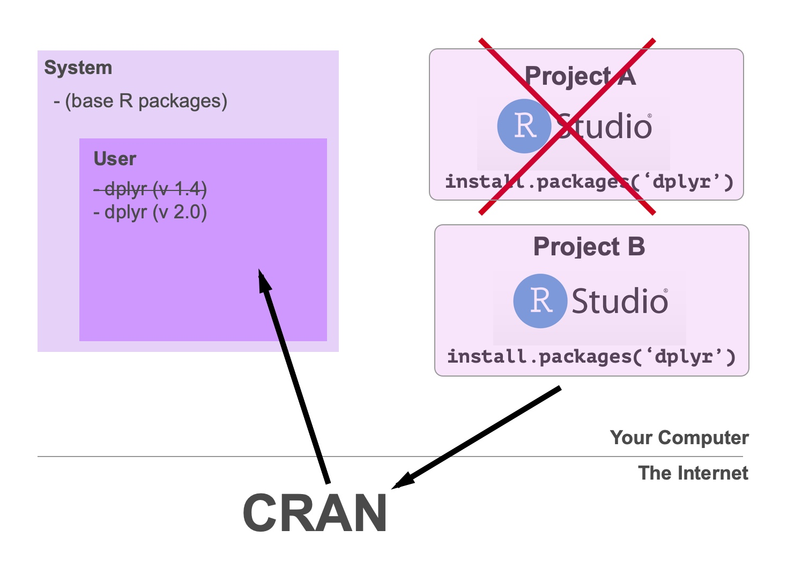
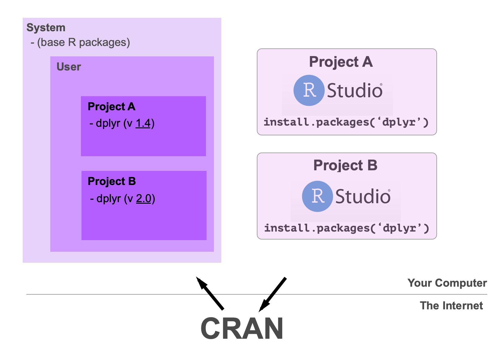

Version Control, {renv}, and Reproducibility
Sep Dadsetan, PhD - Executive Director, RWD Tech at
2023-08-15

Introduction
Overview of today’s agenda
- Importance of Version Control and Reproducibility
- Dive into Git
- Intro to
renv - Working with
renv
Section 1: Importance of Version Control
Version control is a system that records changes to a file or set of files over time so that you can recall specific versions later. It’s a critical practice in software development and has become increasingly important in data science as well. Here’s why:
1. Collaboration
Data science often involves collaboration among multiple team members. Version control systems like Git allow multiple people to work on the same project simultaneously. They can make changes, submit them for review, and merge them into the main project without overwriting each other’s work.
2. Reproducibility
In data science, it’s crucial to be able to reproduce results. By keeping track of the exact versions of code, data, and libraries used, version control helps ensure that experiments can be replicated precisely. This is vital for both validation of results and for future work that builds on previous findings.
3. Experimentation
Data scientists often need to try out different models, features, or hyperparameters. Version control allows them to create branches where they can experiment without affecting the main project. If an experiment is successful, it can be merged back into the main codebase; if not, it can be discarded without any mess.
4. Accountability
Version control maintains a detailed log of who made what changes and when. This is essential for understanding the evolution of a project and can be crucial for regulatory compliance in some industries.
5. Backup and Recovery
Mistakes happen, and code can be lost or broken. Version control acts as a continuous backup, allowing you to revert to previous versions if something goes wrong. This can save hours or even days of work.
6. Code Quality
Through code reviews and the ability to track changes over time, version control can help maintain and improve the quality of the code. It encourages best practices and helps prevent “code rot” where code becomes unmaintained and outdated.
7. Integration with Other Tools
Version control systems often integrate with other tools used in data science, such as continuous integration systems, project management tools, and code notebooks. This can streamline workflows and make the entire process more efficient.
Summary
Version control is not just a tool for software developers. It’s an essential part of modern data science, enabling collaboration, reproducibility, experimentation, and much more. By providing a structured way to manage changes, track history, and integrate with other tools, version control systems like Git help data scientists work more efficiently and effectively.
Section 2: Dive into Git
- Introduction to Git as a distributed version control system
- Basic commands and workflow (clone, add, commit, push, pull)
- Branching and merging in Git
- Demonstration with a simple project

Git Concepts - Simplified
Imagine you’re working on a big puzzle with your friends, and you want to make sure that you can always go back to see how the puzzle looked at different stages. Version control is like taking a picture of the puzzle every time you add a few pieces.
Here’s how it works:
(Repository) - Starting the Puzzle: When you first open the puzzle box, that’s like starting a new project. In version control, this is called creating a “repository.” It’s the place where all the pictures of your puzzle will be stored.
(Commits) - Adding Pieces: Every time you and your friends add some pieces to the puzzle and are happy with how it looks, you take a picture. In version control, this picture is called a “commit.” It’s a snapshot of how everything looks at that moment.
(Branches) - Trying New Things: Sometimes, you might want to try putting together a part of the puzzle without messing up what you’ve already done. You can take the current picture and make a copy to work on. This is called a “branch.” If you like what you’ve done in the branch, you can add it back to the main puzzle. If not, you can just throw that copy away.
(Collaboration) - Working with Friends: Version control lets you and your friends work on the puzzle together without getting in each other’s way. You can all take turns adding pieces and taking pictures, and if someone makes a mistake, you can always look at the previous pictures to see what went wrong.
(History) - Going Back in Time: If you ever want to see how the puzzle looked at any earlier stage, you can look at the pictures you’ve taken along the way. This is the “history” in version control, and it lets you go back in time to see how things have changed.
(Backup) - Keeping Everything Safe: If something happens to the puzzle, like if your little sibling messes it up, you still have all the pictures you’ve taken. You can use those pictures to put the puzzle back the way it was.
So, version control is like a magical camera for your projects. It lets you take pictures of what you’re working on, try new things without worry, work with friends, and even go back in time if you need to. It’s a way to make sure that you can always see how your puzzle—or your project—has grown and changed.
Basic Git Usage and Concepts
Adding and Committing

Basic Git Usage and Concepts
Branching

Let’s get our hands dirty
If this is your first exposure to Git, I’ll say that it takes getting used to and the best way to do that is by using it.
Go ahead and follow along for set up:
- Start a new RStudio Project
- Select Version Control and paste the following url
https://github.com/phdjsep/socalrug-repro-recipesSection 3: Introduction to Renv
- Explanation of Renv - what it is and why it’s needed
- Important concepts
What is renv?
The renv package helps you create create reproducible environments for your R projects.
renv is like a special container for your R project (equivalent to virtualenv in Python).
Imagine you have a toy box, and for each new project, you want to use different sets of toys without mixing them up.
renv helps you create a separate toy box for each project, ensuring that the toys (or in this case, the R packages and versions) don’t get mixed up between different projects.
Why is renv needed?
1. Isolation
Just like you wouldn’t want your puzzle pieces to get mixed up with your building blocks, you don’t want different R projects to use different versions of packages. renv keeps everything separate, so one project’s packages don’t interfere with another’s.
2. Reproducibility
If you want to show your friend how you built a cool toy castle, you need to make sure you have the exact same building blocks and instructions. Similarly, renv ensures that anyone who wants to run your R code can do so with the exact same packages and versions, so they see the same results you did.
3. Simplicity
Managing all the different toys (packages) for different projects can be confusing. renv makes it easier by handling all the details for you. It’s like having a toy organizer that knows exactly where everything goes.
4. Collaboration
If you’re working on a project with friends, you all need to have the same toys to play together. renv helps ensure that everyone on the team has the same setup, so you can all work together smoothly.
Important renv concepts
- Libraries
- A library is a directory containing installed packages.
- These have different “levels” that they can be installed in:
- System
- User
- Project
- Tip: Can view with
.libPaths()command in R console.
- Repositories
- A repository is a source of packages
install.packages()has to go and grab the package from somewhere on the internet (usually CRAN) and puts it into your library.
Without renv


With renv

Section 4: Working with Renv
- Installation and setup of Renv
- Demonstration (time permitting)

Install and Setup renv
- Install the
renvPackage
First, you’ll need to install the renv package from CRAN. Open R or RStudio and run the following command:
install.packages("renv")- Load the
renvpackage
Once the package is installed, you can load it into your R session with:
library(renv)- Intialize
renvfor a Project
Navigate to the directory of your R project (you can do this within RStudio or set the working directory in R), and then run:
renv::init()This command will create a new isolated environment for your project. It will generate a renv.lock file and an renv folder, which contain information about the packages and versions used in the project.
Install and Setup renv
- Managing Packages with
renv
Once renv is initialized, any packages you install or remove will be specific to that project. You can use standard commands like install.packages() or remove.packages(), and renv will manage them within the project’s environment.
- Sharing and Reproducing the Environment
If you want to share the project with others or move it to a different system, the renv.lock file contains all the information needed to recreate the environment. Someone else can clone the project and run:
renv::restore()This command will install all the packages and versions specified in the renv.lock file, ensuring that the project’s environment is reproduced exactly.
Let’s get our hands dirty…again
Let’s install renv into our recipes repository to add some isolation and improve our reproducibility.
Helpful Resources
- Git Cheatsheet
- git - the simple guide
- Happy Git and Github for the useR
- A Visual Git Reference
- renv site